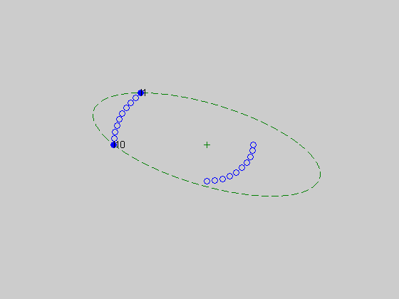
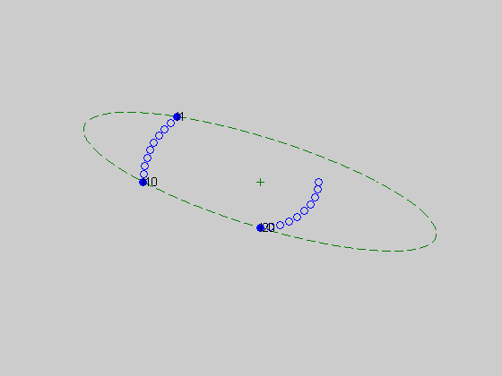
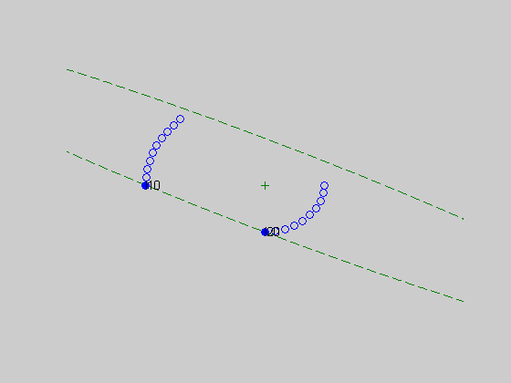
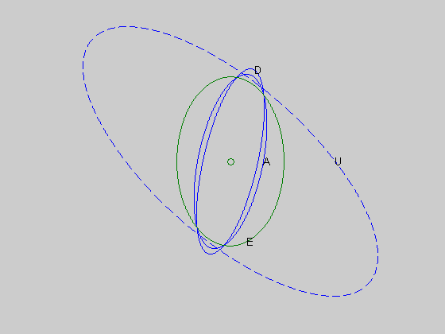

Section 7.5.2: Experiment design
m = 10;
angles1 = linspace(3*pi/4,pi,m);
angles2 = linspace(0,-pi/2,m);
V = [3.0*[cos(angles1); sin(angles1)], ...
1.5*[cos(angles2); sin(angles2)]];
p = size(V,2);
n = 2;
noangles = 5000;
cvx_begin
variable lambda(p)
maximize ( det_rootn( V*diag(lambda)*V' ) )
subject to
sum(lambda) == 1;
lambda >= 0;
cvx_end
lambdaD = lambda;
figure(1)
W = inv(V*diag(lambda)*V');
angles = linspace(0,2*pi,noangles);
R = chol(W);
ellipsoid = sqrt(2)*(R\[cos(angles); sin(angles)]);
d = plot(ellipsoid(1,:), ellipsoid(2,:), '--', 0,0,'+');
set(d, 'Color', [0 0.5 0]); set(d(2),'MarkerFaceColor',[0 0.5 0]);
hold on;
dot=plot(V(1,:),V(2,:),'o');
ind = find(lambda > 0.001);
dots = plot(V(1,ind),V(2,ind),'o');
set(dots,'MarkerFaceColor','blue');
disp('Nonzero lambda values for D design:');
for i=1:length(ind)
text(V(1,ind(i)),V(2,ind(i)), ['l',int2str(ind(i))]);
disp(['lambda(',int2str(ind(i)),') = ', num2str(lambda(ind(i)))]);
end;
axis([-5 5 -5 5])
set(gca,'Xtick',[]);
set(gca,'Ytick',[]);
hold off, axis off
e = eye(2,2);
cvx_begin sdp
variables lambda(p) u(n)
minimize ( sum(u) )
subject to
for k = 1:n
[ V*diag(lambda)*V' e(:,k);
e(k,:) u(k) ] >= 0;
end
sum(lambda) == 1;
lambda >= 0;
cvx_end
lambdaA = lambda;
figure(2)
W = inv(V*diag(lambda)*V')^2;
mu = diag(V'*W*V);
mu = mean(mu(ind));
angles = linspace(0,2*pi,noangles);
R = chol(W);
ellipsoid = sqrt(mu)*(R\[cos(angles); sin(angles)]);
d = plot(ellipsoid(1,:), ellipsoid(2,:), '--',0,0,'+');
set(d, 'Color', [0 0.5 0]);
set(d(2), 'MarkerFaceColor', [0 0.5 0]);
hold on
dot = plot(V(1,:),V(2,:),'o');
ind = find(lambda > 0.001);
dots = plot(V(1,ind),V(2,ind),'o');
set(dots,'MarkerFaceColor','blue');
disp('Nonzero lambda values for A design:');
for i=1:length(ind)
text(V(1,ind(i)),V(2,ind(i)), ['l',int2str(ind(i))]);
disp(['lambda(',int2str(ind(i)),') = ', num2str(lambda(ind(i)))]);
end;
axis([-5 5 -5 5])
set(gca,'Xtick',[]);
set(gca,'Ytick',[]);
axis off, hold off
cvx_begin sdp
variables t lambda(p)
maximize ( t )
subject to
V*diag(lambda)*V' >= t*eye(n,n);
sum(lambda) == 1;
lambda >= 0;
cvx_end
lambdaE = lambda;
figure(3)
mu = diag(V'*W*V);
mu = mean(mu(ind));
angles = linspace(0,2*pi,noangles);
R = chol(W);
ellipsoid = sqrt(mu)*(R\[cos(angles); sin(angles)]);
d = plot(ellipsoid(1,:), ellipsoid(2,:), '--', 0, 0, '+');
set(d, 'Color', [0 0.5 0]);
set(d(2), 'MarkerFaceColor', [0 0.5 0]);
hold on
dot = plot(V(1,:),V(2,:),'o');
lambda = lambda(1:p);
ind = find(lambda > 0.001);
dots = plot(V(1,ind),V(2,ind),'o');
set(dots,'MarkerFaceColor','blue');
disp('Nonzero lambda values for E design:');
for i=1:length(ind)
text(V(1,ind(i)),V(2,ind(i)), ['l',int2str(ind(i))]);
disp(['lambda(',int2str(ind(i)),') = ', num2str(lambda(ind(i)))]);
end;
axis([-5 5 -5 5])
set(gca,'Xtick',[]);
set(gca,'Ytick',[]);
axis off, hold off
eta = 6.2514;
W = V*diag(lambdaD)*V';
angles = linspace(0,2*pi,noangles);
R = chol(W);
ellipsoid = sqrt(eta)*(R\[cos(angles); sin(angles)]);
figure(4)
plot(0,0,'ok',ellipsoid(1,:), ellipsoid(2,:), '-');
text(ellipsoid(1,1100),ellipsoid(2,1100),'D');
hold on
W = V*diag(lambdaA)*V';
angles = linspace(0,2*pi,noangles);
R = chol(W);
ellipsoid = sqrt(eta)*(R\[cos(angles); sin(angles)]);
plot(0,0,'ok',ellipsoid(1,:), ellipsoid(2,:), '-');
text(ellipsoid(1,1),ellipsoid(2,1),'A');
W = V*diag(lambdaE)*V';
angles = linspace(0,2*pi,noangles);
R = chol(W);
ellipsoid = sqrt(eta)*(R\[cos(angles); sin(angles)]);
d=plot(0,0,'ok',ellipsoid(1,:), ellipsoid(2,:), '-');
set(d,'Color',[0 0.5 0]);
text(ellipsoid(1,4000),ellipsoid(2,4000),'E');
W_u = inv(V*V'/p);
R = chol(W_u);
ellipsoid_u = sqrt(eta)*(R\[cos(angles); sin(angles)]);
plot(ellipsoid_u(1,:), ellipsoid_u(2,:), '--');
text(ellipsoid_u(1),ellipsoid_u(2),'U');
set(gca,'Xtick',[]);
set(gca,'Ytick',[]);
axis off
hold off
Calling SDPT3: 33 variables, 10 equality constraints
------------------------------------------------------------
num. of constraints = 10
dim. of sdp var = 6, num. of sdp blk = 2
dim. of linear var = 20
*******************************************************************
SDPT3: Infeasible path-following algorithms
*******************************************************************
version predcorr gam expon scale_data
HKM 1 0.000 1 0
it pstep dstep pinfeas dinfeas gap mean(obj) cputime
-------------------------------------------------------------------
0|0.000|0.000|2.1e+02|6.6e+01|2.3e+03| 0.000000e+00| 0:0:00| chol 1 1
1|0.878|0.928|2.6e+01|4.8e+00|3.0e+02|-1.300232e+01| 0:0:00| chol 1 1
2|0.674|1.000|8.4e+00|1.0e-02|1.1e+02|-1.478829e+01| 0:0:00| chol 1 1
3|1.000|1.000|1.2e-06|1.0e-03|1.5e+01|-9.035195e+00| 0:0:00| chol 1 1
4|0.993|0.874|4.0e-07|2.1e-04|2.1e+00|-2.967124e+00| 0:0:00| chol 1 1
5|1.000|1.000|6.0e-08|1.0e-05|1.2e+00|-3.221240e+00| 0:0:00| chol 1 1
6|1.000|1.000|1.5e-08|1.0e-06|3.6e-01|-3.149400e+00| 0:0:00| chol 1 1
7|0.975|0.972|8.9e-10|1.3e-07|1.1e-02|-3.181040e+00| 0:0:00| chol 1 1
8|0.983|0.986|1.1e-09|1.2e-08|1.7e-04|-3.181960e+00| 0:0:00| chol 1 1
9|0.967|0.974|8.0e-09|5.2e-10|5.5e-06|-3.181980e+00| 0:0:00| chol 1 2
10|1.000|1.000|1.3e-12|3.2e-10|8.6e-07|-3.181980e+00| 0:0:00| chol 2 2
11|1.000|1.000|1.2e-12|1.0e-12|3.1e-08|-3.181981e+00| 0:0:00|
stop: max(relative gap, infeasibilities) < 1.49e-08
-------------------------------------------------------------------
number of iterations = 11
primal objective value = -3.18198049e+00
dual objective value = -3.18198052e+00
gap := trace(XZ) = 3.12e-08
relative gap = 4.24e-09
actual relative gap = 4.24e-09
rel. primal infeas = 1.16e-12
rel. dual infeas = 9.99e-13
norm(X), norm(y), norm(Z) = 1.7e+01, 4.3e+00, 7.8e+00
norm(A), norm(b), norm(C) = 2.9e+01, 2.0e+00, 1.7e+00
Total CPU time (secs) = 0.3
CPU time per iteration = 0.0
termination code = 0
DIMACS: 1.2e-12 0.0e+00 1.1e-12 0.0e+00 4.2e-09 4.2e-09
-------------------------------------------------------------------
------------------------------------------------------------
Status: Solved
Optimal value (cvx_optval): +3.18198
Nonzero lambda values for D design:
lambda(1) = 0.50001
lambda(10) = 0.49999
Calling SDPT3: 32 variables, 11 equality constraints
------------------------------------------------------------
num. of constraints = 11
dim. of sdp var = 6, num. of sdp blk = 2
dim. of linear var = 20
*******************************************************************
SDPT3: Infeasible path-following algorithms
*******************************************************************
version predcorr gam expon scale_data
HKM 1 0.000 1 0
it pstep dstep pinfeas dinfeas gap mean(obj) cputime
-------------------------------------------------------------------
0|0.000|0.000|4.4e+02|4.6e+01|4.5e+03| 6.000000e+00| 0:0:00| chol 1 1
1|0.978|1.000|9.8e+00|1.0e-01|1.3e+02|-1.101566e+01| 0:0:00| chol 1 1
2|1.000|1.000|4.6e-07|1.0e-02|1.9e+01|-7.611888e+00| 0:0:00| chol 1 1
3|0.982|0.914|8.4e-08|1.8e-03|1.6e+00| 5.947306e-01| 0:0:00| chol 1 1
4|1.000|1.000|3.8e-07|1.0e-04|1.1e+00| 6.668692e-01| 0:0:00| chol 1 1
5|1.000|1.000|5.3e-09|1.0e-05|2.5e-01| 8.773279e-01| 0:0:00| chol 1 1
6|1.000|1.000|2.6e-09|1.0e-06|1.1e-01| 8.481864e-01| 0:0:00| chol 1 1
7|0.967|0.951|2.6e-09|1.5e-07|7.5e-03| 8.505652e-01| 0:0:00| chol 1 1
8|0.983|0.982|9.7e-10|1.3e-08|1.4e-04| 8.495449e-01| 0:0:00| chol 1 1
9|0.981|0.984|1.0e-09|4.0e-10|2.5e-06| 8.495283e-01| 0:0:00| chol 2 2
10|1.000|1.000|8.8e-13|2.0e-10|1.8e-07| 8.495280e-01| 0:0:00| chol 2 2
11|1.000|1.000|4.3e-12|1.0e-12|5.2e-09| 8.495279e-01| 0:0:00|
stop: max(relative gap, infeasibilities) < 1.49e-08
-------------------------------------------------------------------
number of iterations = 11
primal objective value = 8.49527927e-01
dual objective value = 8.49527922e-01
gap := trace(XZ) = 5.16e-09
relative gap = 1.91e-09
actual relative gap = 1.91e-09
rel. primal infeas = 4.34e-12
rel. dual infeas = 1.00e-12
norm(X), norm(y), norm(Z) = 8.1e+00, 1.7e+00, 2.8e+00
norm(A), norm(b), norm(C) = 4.0e+01, 2.7e+00, 2.4e+00
Total CPU time (secs) = 0.3
CPU time per iteration = 0.0
termination code = 0
DIMACS: 5.9e-12 0.0e+00 1.2e-12 0.0e+00 1.9e-09 1.9e-09
-------------------------------------------------------------------
------------------------------------------------------------
Status: Solved
Optimal value (cvx_optval): +0.849528
Nonzero lambda values for A design:
lambda(1) = 0.29661
lambda(10) = 0.37797
lambda(20) = 0.32543
Calling SDPT3: 24 variables, 4 equality constraints
------------------------------------------------------------
num. of constraints = 4
dim. of sdp var = 2, num. of sdp blk = 1
dim. of linear var = 20
dim. of free var = 1 *** convert ublk to lblk
*******************************************************************
SDPT3: Infeasible path-following algorithms
*******************************************************************
version predcorr gam expon scale_data
HKM 1 0.000 1 0
it pstep dstep pinfeas dinfeas gap mean(obj) cputime
-------------------------------------------------------------------
0|0.000|0.000|2.2e+02|4.6e+01|2.3e+03|-1.437979e-10| 0:0:00| chol 1 1
1|0.993|0.997|1.6e+00|2.3e-01|4.1e+01|-1.235606e+01| 0:0:00| chol 1 1
2|1.000|0.571|1.7e-06|1.1e-01|1.4e+01|-7.394800e+00| 0:0:00| chol 1 1
3|1.000|0.650|3.1e-06|3.7e-02|5.3e+00|-3.311522e+00| 0:0:00| chol 1 1
4|1.000|0.304|1.4e-07|2.6e-02|3.7e+00|-2.674917e+00| 0:0:00| chol 1 1
5|1.000|0.457|3.3e-07|1.4e-02|2.1e+00|-2.114261e+00| 0:0:00| chol 1 1
6|1.000|0.213|2.8e-08|1.1e-02|1.6e+00|-2.095521e+00| 0:0:00| chol 1 1
7|1.000|0.647|5.9e-08|3.9e-03|6.1e-01|-1.857209e+00| 0:0:00| chol 1 1
8|1.000|0.571|3.8e-09|1.7e-03|2.0e-01|-1.851771e+00| 0:0:00| chol 1 1
9|1.000|0.968|4.2e-09|5.4e-05|5.5e-03|-1.800871e+00| 0:0:00| chol 1 1
10|0.989|0.988|1.9e-10|6.2e-07|6.4e-05|-1.800010e+00| 0:0:00| chol 1 1
11|0.989|0.989|4.6e-11|6.3e-07|2.0e-06|-1.800000e+00| 0:0:00| chol 1 1
12|0.999|0.989|1.2e-09|2.0e-08|6.8e-08|-1.800000e+00| 0:0:00| chol 1 1
13|1.000|0.989|3.4e-10|6.8e-10|2.2e-09|-1.800000e+00| 0:0:00|
stop: max(relative gap, infeasibilities) < 1.49e-08
-------------------------------------------------------------------
number of iterations = 13
primal objective value = -1.80000000e+00
dual objective value = -1.80000000e+00
gap := trace(XZ) = 2.20e-09
relative gap = 4.79e-10
actual relative gap = 2.46e-10
rel. primal infeas = 3.36e-10
rel. dual infeas = 6.78e-10
norm(X), norm(y), norm(Z) = 2.0e+00, 2.1e+00, 5.9e+00
norm(A), norm(b), norm(C) = 2.9e+01, 2.0e+00, 2.4e+00
Total CPU time (secs) = 0.4
CPU time per iteration = 0.0
termination code = 0
DIMACS: 3.4e-10 0.0e+00 8.2e-10 0.0e+00 2.5e-10 4.8e-10
-------------------------------------------------------------------
------------------------------------------------------------
Status: Solved
Optimal value (cvx_optval): +1.8
Nonzero lambda values for E design:
lambda(10) = 0.2
lambda(20) = 0.8
   